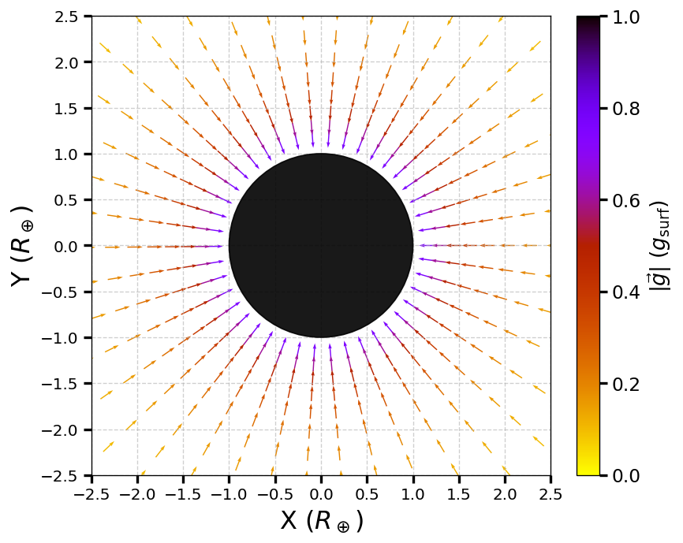

13. Gravitation#
13.1. Newton’s Law of Universal Gravitation#
13.1.1. The History of Gravitation#
The earliest philosophers wondered why objects naturally tend to fall toward the ground. Aristotle believed that the natural state of some objects to seek the Earth, while others (e.g., fire) would float away and seek Heaven instead. Almost a millennium later, Brahmagupta described an attractive force that caused all objects to fall toward the center of a spherical Earth.
The motions of the Sun, Moon, and the planets were studied for thousands of years before an accurate model was developed. About 2000 years ago, Ptolemy used the method of epicycles, which proved to be an accurate method given the technological sophistication of making the measurements. Although several scholars may have developed ideas about an inward seeking force or the motions of astronomical bodies, there is little evidence that anyone had synthesized these ideas together into a single framework until the 17th century (i.e., 1600-1700 AD).
The idea of heliocentrism (e.g., the Sun is at the center of the Solar System) was introduced (at least) by the 3rd century BC by Aristarchus of Samos. For many years, scholars paid little attention to the idea because the could not reconcile a moving Earth with the absence of an observable parallax. Therefore, Ptolemy’s geocentric model held sway until the 16th century, when Nicolaus Copernicus proposed a mathematical model of a heliocentric system and estimated the distances for each of the planets to the Sun, albeit on assumed circular orbits. Copernicus’ ideas were initially supported by religious figures at the time, but eventually (about a century later) ran in contrast to the Catholic church’s teachings.
Tycho Brahe attempted to develop a hybrid geocentric-heliocentric model but did not finish before his death. Prior to his demise, he employed Johannes Kepler as a research assistant. Brahe assigned Kepler the so-called ‘Mars problem’ as an attempt to stall Kepler from overshadowing him. However, Kepler would develop his laws of planetary motion (in 1609 (1st and 2nd) and 1619 (3rd)) that largely corrected the Copernican model use ellipses instead of circles for the orbits. At the same time (~1610) Galileo was using his ‘telescope’ to observe the heavens and discovering that Jupiter hosted 4 moons of its own. Western European natural scientists could develop a model that predicted the location of the planets with higher accuracy, however they had no mathematical description to explain why the planets moved around the Sun.
It was Isaac Newton who connected the acceleration of objects near Earth’s surface with the centripetal acceleration of the planets around the Sun (i.e., gravity). To accomplish this feat, Newton had to largely invent new domains of study, which included calculus and by its application mechanics. He also made ground-breaking discoveries in his day for the field of optics and thermodynamics. He developed a numerical algorithm that is efficient in solving some problems (e.g., root-finding or solving transcendental equations) that is still used today in modern-computing, Newton-Raphson method.
13.1.2. Newton’s Law of Universal Gravitation (Defined)#
Newton noted that objects at Earth’s surface (at a distance \(R_\oplus\) from Earth’s center) have an acceleration of \(g\). However, at a distance of \(60\ R_\oplus\), the Moon has a centripetal acceleration about \((60)^2\) times smaller than \(g\). He explained this by postulating that a force exists between any two objects, whose magnitude is given by the product of the two masses divided by the square of the distance between them.
There exists a category of phenomena in nature that are explained by so-called ‘inverse-square law’, or a decrease in magnitude that increases with the inverse-square of the distance. We now know that this is a function of geometry and how the surface of a sphere increases with distance, which dilutes the strength of a source that has spherical symmetry. The surface area of a sphere is \(4\pi r^2\), so we see that if there is a source with a strength \(S\), then it scales as \(S/r^2\) (i.e., an inverse-square law).
Newton’s Law of Gravitation
Newton’s law of gravitation can be expressed as a vector by
where \(\vec{F}_{12} is the force between object 1 exerted by object 2 and \)\hat{r}_{12} is the radial unit vector that points from object 1 toward object 2.
Fig. 13.1 Image Credit: Openstax.#
Figure 13.1 shows how \(\vec{F}_{12}\) describes as an attractive force pulling object 1 toward object 2. However, there is an equal but opposite force \(vec{F}_{21}\) directed from object 2 toward object 1, \(\vec{F}_{12} = -\vec{F}_{21}\).
These equal but opposite forces reflect Newton’s 3rd law. Newton’s law of gravitation (as expressed) applies to any spherically symmetric object, where \(r\) is the distance each object’s center-of-mass. This also implicitly assumes that the individual radii of the masses (\(R\)) is much smaller than the distance between the objects (\(R\ll r\)). In many cases, Newton’s formulation still works for nonsymmetrical objects due to \(R\ll r\).
13.1.3. The Cavendish Experiment (measuring \(G\))#
A century after Newton published his law of universal gravitation, Henry Cavendish determined the proportionality constant \(G\) by performing a very difficult experiment using a device with two masses connected by a rod that is itself suspended by a wire (see Figure 13.2). The wire also had a mirror that redirected the light from a fixed source. The masses on the rod were placed near two stationary masses, where the torque from the gravitation force between the spheres would twist the wire and change the angle of reflection for the light hitting the mirror. Therefore, the reflected light would change position on the fixed scale.
Fig. 13.2 Image Credit: Openstax.#
The constant \(G\) is called the universal gravitational constant and Cavendish determined it as \(G = 6.67 \times 10^{-11}\ {\rm N\cdot m^2/kg^2}\). The word ‘universal’ indicates that scientists think that this constant applies to masses of any composition and that it is the same throughout the Universe. The value of \(G\) (in SI units) is an incredibly small number, which shows that the force of gravity is very weak. For example, two \(1\ {\rm kg}\) masses locates a meter apart exert a force of \(7 \times 10^{-11}\ {\rm N}\) on each other.
Note
The value of \(G\) given here depends on the units used (i.e., SI units). However, if you choose to work in a different (sometimes more convenient) set of units, then you could determine \(G\) to a easy magnitude to remember. In orbital mechanics, researchers will often use a magnitude of \(G\) so that it equals \(1\) or \(4\pi^2\), but you must reconcile the units appropriately.
Although gravity is the weakest force compared to the other three fundamental forces of nature, its attractive force holds us to the Earth, causes the planets to orbit the Sun, and the Sun to orbit our Galaxy. It goes even further to bind galaxies into clusters and is the force that determines the fate of the Universe.
Problem-Solving Strategy
Newton’s Law of Gravitation
To determine the motion caused by the gravitational force:
Identify the two masses.
Draw a free-body diagram, sketch the force acting on each mass, and indicate the distance between their respective center-of-mass.
Apply Newton’s 2nd law of motion to each mass to determine how it will move.
13.1.4. Example Problem: Collision in Orbit#
13.1.5. Example Problem: Attraction between Galaxies#
13.2. Gravitation Near Earth’s Surface#
13.2.1. Weight#
Recall that the acceleration of a free-falling object near Earth’s surface is approximately \(9.81\ {\rm m/s^2}\). The force causing this acceleration is called the weight of the object, where we previously found that it has a value \(w=mg\) from Newton’s 2nd law. The weight is present regardless of whether the object is in free fall or not.
We now know the weight is caused by the gravitational force between the object of mass \(m\) and the Earth of mass \(M_\oplus\). If we equate the measured weight with the expected gravitational force, we can arrive at a scalar equation because both forces act in the same radial direction \(\hat{r}\). The scalar equation is given as
where \(r = R_\oplus + h\) is the distance between the Earth and the object in terms of their respective center-of-mass. Using the second equation, we can see that the mass \(m\) is on both sides and can cancel, leaving
The standard mean radius of the Earth is \(6371\ {\rm km}\). For objects within a few kilometers of Earth’s surface, we can take \(r = R_\oplus + h \approx R_\oplus\) because \(h\ll R_\oplus\). From Exercise 9.14, we can see that the center-of-mass (see Fig. 13.3) of a low mass (compared to the Earth itself) object with the Earth would essentially still be at the Earth’s center. As a result, we can ignore the fact that the Earth accelerates toward the falling object.
Fig. 13.3 Image Credit: Openstax.#
13.2.1.1. Example Problem: Mass of the Earth#
13.2.2. The Gravitational Field#
Equation (13.3) is a scalar equation, but we could have retained the vector form for the force of gravity and written the acceleration in vector form (in general) as
We identify the vector field represented by \(\vec{g}\) as the gravitational field caused by mass \(M\). Figure 13.4 illustrates the gravitational field around the Earth showing the lines are directed radially inward, symmetrically about the Earth, and color-coded relative to \(g_{\rm surf} = 9.81\ {\rm m/s^2}\).

Fig. 13.4 Gravitational field around Earth shown in units of \(R_\oplus\) and \(g_{\rm surf}\).#
Show code cell content
import numpy as np
import matplotlib.pyplot as plt
from matplotlib.colors import Normalize
from matplotlib import rcParams
from myst_nb import glue
rcParams.update({'font.size': 16})
G = 4*np.pi**2
M = 3.003e-6 #mass of Earth (in M_sun)
R_earth = 4.26e-5 #Radius of Earth (in AU)
fs = 'large'
lim = 2.3
n = 20
r_vals = np.geomspace(1.15, 5.0, 14)
theta_vals = np.arange(0, 2*np.pi, 0.16)
pts = []
for r in r_vals:
ntheta = max(8, int(40 / np.sqrt(r)))
thetas = np.arange(0, 2*np.pi, 0.15)
for th in thetas:
pts.append((r*np.cos(th), r*np.sin(th)))
pts = np.array(pts)
Xr, Yr = pts[:, 0], pts[:, 1]
X = Xr * R_earth
Y = Yr * R_earth
R = np.sqrt(X**2 + Y**2)
Rr = np.sqrt(Xr**2 + Yr**2)
mask = Rr >= 1
gx = np.zeros_like(X)
gy = np.zeros_like(Y)
np.divide(-G*M*X, R**3, out=gx, where=mask)
np.divide(-G*M*Y, R**3, out=gy, where=mask)
g0 = G*M / R_earth**2
gx /= g0
gy /= g0
gmag = np.sqrt(gx**2 + gy**2)
ux = np.zeros_like(gx)
uy = np.zeros_like(gy)
np.divide(gx, gmag, out=ux, where=mask)
np.divide(gy, gmag, out=uy, where=mask)
ux[~mask] = np.nan
uy[~mask] = np.nan
gmag[~mask] = np.nan
fig = plt.figure(figsize=(7, 7),dpi=120)
ax = fig.add_subplot(111)
ax.grid(True,ls='--',alpha=0.6,zorder=2)
norm = Normalize(vmin=0, vmax=1)
q = ax.quiver(Xr, Yr, ux, uy, gmag, pivot='mid', scale=30, cmap='gnuplot_r',norm=norm)
cbar = fig.colorbar(q, ax=ax, fraction=0.055, pad=0.05, shrink=0.9)
cbar.set_label(r'$|\vec{g}|\ (g_{\rm surf})$')
cbar.ax.tick_params(axis='both', which='major', labelsize=14, length=6, width=2)
earth = plt.Circle((0, 0), 1, color='k', alpha=0.9,zorder=5)
ax.add_patch(earth)
ax.set_xlim(-lim, lim)
ax.set_ylim(-lim, lim)
ax.set_aspect('equal')
ax.set_xlabel(r'X ($R_\oplus$)',fontsize=fs)
ax.set_ylabel(r'Y ($R_\oplus$)',fontsize=fs)
ax.set_xticks(np.arange(-2.5,3,0.5))
ax.set_yticks(np.arange(-2.5,3,0.5))
#ax.minorticks_on()
ax.tick_params(axis='both', which='minor', length=4, width=1)
ax.tick_params(axis='both', which='major', labelsize=12, length=6, width=2);
glue("grav_field_2d", fig, display=False);
The direction of \(\vec{g}\) is parallel to the field lines at any point, where the strength of \(\vec{g}\) at any point is inversely proportional to the line spacing. In other words, the magnitude of the field in any region is proportional to the number of lines that pass through a unit surface area, effectively a density of lines.
Since the lines are equally spaced in angle \(\theta\), the number of lines per unit surface area at a distance \(r\) from the Earth is the total number of lines divided by the surface area of a sphere of radius \(r\), which is proportional to \(r^2\). Hence, you expect nearby lines to increase in spacing between the lines and along a single radial line.
In the field picture, we say that a mass \(m\) interacts with the gravitational field of mass \(M\).
13.2.3. Apparent Weight: Accounting for Earth’s Rotation#
Objects moving at constant speed in a circle have a centripetal acceleration directed toward the center of that circle. This means that there must be a net force directed toward the center of that circle. Since all objects on the surface of the Earth move through a circle every 24 hours, there must be a net centripetal force on each object.
Let’s first consider an object of mass \(m\) located at the equator, suspended from a scale (see Fig. 13.5). The scale exerts an upward force \(\vec{F}_{\rm SE}\) away from the Earth’s center. This is the reading on the scale, and is the apparent weight of the object. The weight \(mg\) points toward the Earth’s center. If Earth were not rotating, the acceleration would be zero, and the net force would be zero (i.e., \(F_s = mg\)).
Fig. 13.5 Image Credit: Openstax.#
With rotation, the sum of these forces must provide the centripetal acceleration \(a_c\). Using Newton’s 2nd law, we have
The centripetal acceleration \(a_c = -\frac{v^2}{r}\) points in the same direction as the weight; hence, it is negative. The tangential speed \(v\) is the speed at the equator and \(r = R_\oplus\).
We can calculate the speed simply by noting that objects on the equator travel the circumference of Earth in 24 hours. Recall that the tangential speed is related to the angular speed \(\omega\) by \(v = r\omega\), and \(a_c = -r\omega^2\). Therefore, we can write the force in terms of the angular speed by
The angular speed of Earth everywhere is
Substituting \(R_\oplus = 6371\ {\rm km}\) and \(\omega = 7.27 \times 10^{-5}\ {\rm rad/s}\) into the formula for the centripetal acceleration results in \(a_c = 0.0337\ {\rm m/s^2}\). This is only \(0.34\%\) of the surface gravity, so it is clearly a small correction.
Consider a more rapidly spinning Earth (e.g., \(12\ {\rm hr}\)), then this correction increases only to \(1.36\%\). For this correction to be large, the Earth needs to be larger and rapidly rotating. The surface gravity of Saturn is \({\sim}9.8\ {\rm m/s^2}\) at the edge of its atmosphere and rotating in about \(10.5\ {\rm hr}\). The centripetal acceleration would be \({\sim}50\times\) larger, which contributes to its slightly squashed appearance.
13.2.3.1. Example Problem: Zero Apparent Weight#
13.2.4. Results Away from the Equator#
At the pole, \(a_c \rightarrow 0\) and \(F_{\rm SN} = F_{\rm SS} = mg\) (see Fig. 13.5), just as is the case without rotation. At any other latitude \(\lambda\), the situation is more complicated.
The centripetal acceleration is directed toward point \(P\) in Fig. 13.5, which is the \(z\) distance from the center and the radius becomes \(r = R_\oplus \cos{\lambda}\). The vector sum of the weight and \(\vec{F}_s\) must point toward point \(P\), hence \(\vec{F}_s\) no longer points away from the center of Earth.
A plumb bob will always point along this deviated direction. All buildings are built aligned along this deviated direction, not along a radius through the center of Earth. For the tallest buildings, this represents a deviation of a few feet at the top.
The Earth is not a perfect sphere, where it has a bulge at the equator due to its rotation. The radius of the Earth is about \(30\ {\rm km}\) greater at the equator compared to the poles. There is a difference in your weight due to the rotation depending on your latitude, although this difference is small.
13.2.5. Gravity Away from the Surface#
The law of gravitation applies to spherically symmetric objects, but it also valid for symmetrical mass distributions and only valid for values \(r\geq R_\oplus\).
For \(r<R_\oplus\), our formulation of gravity is not valid nor is our acceleration due to gravity \(g\). However, we can determine \(g\) using a principle that comes from Gauss’ law. A consequence of Gauss’ law, applied to gravitation, is that only the mass within \(r\) contributes to the gravitational force. Also the mass interior to \(r\) can be considered to be located at the center. The gravitational effect of the mass outside \(r\) has zero net effect.
Two special cases occur:
The first considers a spherical planet with constant density, the mass within \(r\) is found by the product of the density and the volume within \(r\). The mass can be considered located at the center. We can replace the mass \(M_\oplus\) with the mass within \(r\), or \(M_r\). Then, we have
The value of \(g\) (and hence your weight) decreases linearly as you descend down a hole into the center of the Earth. At the center you are weightless, as teh mass of the planet pulls equally in all directions.
Actually Earth’s density is not constant, not is Earth solid throughout. Figure 13.6 shows the profile of \(g\) if Earth had constant density, as well as the more likely profile based upon density determined from seismic data.
Fig. 13.6 Image Credit: Openstax.#
The second interesting case concerns living on a spherical shell planet. This scenario has been proposed in many science fiction stories. Ignoring significant engineering issues, the shell could be constructed with a desired radius and total mass to mimic Earth’s surface gravity \(g\).